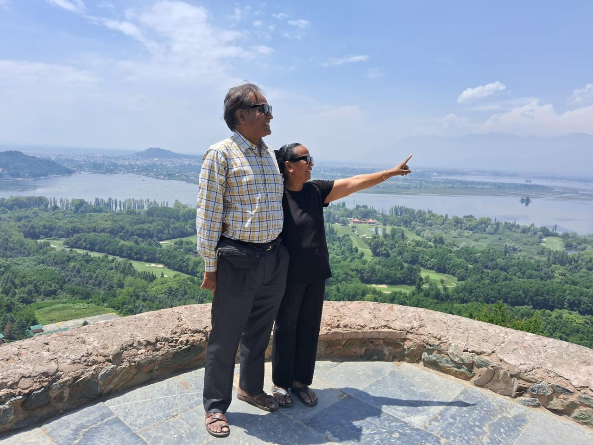

🌍 यात्राएँ : अनुभव, अध्यात्म और जीवन की सीख

मेरे जीवन में यात्राएँ केवल स्थान परिवर्तन का माध्यम नहीं रहीं, बल्कि ज्ञान, आध्यात्मिकता, संस्कृति, प्रकृति और जीवन के विविध आयामों को समझने का अवसर भी बनीं। प्रत्येक यात्रा ने मेरे जीवन में नई ऊर्जा, नई प्रेरणा और नई सीख का संचार किया।
विशेष यात्रा स्मृतियाँ
🌸 कुरुक्षेत्र : धर्म और कर्तव्य की भूमि
नवंबर 2025 में हमने परिवार के साथ कुरुक्षेत्र की यात्रा की। इस यात्रा में डॉ. एस. एन. गुप्ता, प्रभात, रितु और युग सहित परिवार के सदस्य साथ रहे। यह यात्रा केवल पारिवारिक भ्रमण नहीं थी, बल्कि भारतीय इतिहास, धर्म और संस्कृति से जुड़ने का विशेष अवसर थी।
कुरुक्षेत्र में गीता उपदेश स्थल, गुरुकुल कुरुक्षेत्र, इस्कॉन मंदिर, ब्रह्मसरोवर, शेख चिल्ली स्मारक और अनेक ऐतिहासिक स्थलों का दर्शन किया। गीता की पावन भूमि पर खड़े होकर ऐसा लगा मानो भगवान श्रीकृष्ण का दिव्य संदेश आज भी मानवता का मार्गदर्शन कर रहा हो।
🏔️ कश्मीर : धरती पर स्वर्ग का अनुभव
वर्ष 2026 में सेवा निवृत्ति के बाद हमने कश्मीर यात्रा की। यह यात्रा मेरे जीवन की सबसे सुंदर, सबसे यादगार और सबसे अधिक हृदय में बस जाने वाली यात्राओं में से एक रही।
पहलगाम, बेताब वैली, सोनमर्ग, गुलमर्ग, दूधपतरी और श्रीनगर का भ्रमण अत्यंत अद्भुत रहा। सोनमर्ग में ग्लेशियर तक पहुँचने का अवसर मिला, जहाँ बर्फ से आच्छादित पर्वतों के बीच प्रकृति का दिव्य स्वरूप देखने को मिला।
श्रीनगर में शंकराचार्य मंदिर, परी महल, निशात बाग, शालीमार बाग, डल झील, नागिन झील, हजरतबल दरगाह, हरी पर्वत और लाल चौक जैसे स्थलों का दर्शन किया। कश्मीर की वादियाँ, झीलें, पर्वत और शांत वातावरण आज भी मेरी आँखों के सामने जीवंत हैं।
🛕 प्रथम यात्राएँ और आध्यात्मिक अनुभव
मेरी प्रारम्भिक यात्राओं में प्रयागराज, वाराणसी, सारनाथ, अयोध्या और फैजाबाद की यात्रा विशेष रही। त्रिवेणी संगम पर स्नान, काशी विश्वनाथ मंदिर के दर्शन और अयोध्या की पावन भूमि ने मेरे मन पर अमिट प्रभाव छोड़ा।
वाराणसी के घाट पर हुई एक स्मरणीय घटना आज भी मेरे हृदय में सुरक्षित है, जब प्रभु की कृपा से मैं एक बड़ी दुर्घटना से बच गई और उस क्षण दांपत्य प्रेम की गहराई को महसूस किया।
🌿 प्रकृति और शांति की यात्राएँ
हरिद्वार, ऋषिकेश, देहरादून, मसूरी, नैनीताल, अल्मोड़ा, कौसानी और रानीखेत की यात्राएँ प्रकृति के निकट ले जाने वाली रहीं। गंगा की कल-कल धारा, राम झूला, लक्ष्मण झूला, नैना देवी मंदिर, भीमताल, रामगढ़ और हिमालयी वादियों ने मन को गहरी शांति दी।
🇮🇳 इतिहास, संस्कृति और राष्ट्रप्रेम
पंजाब, हरियाणा और वाघा बॉर्डर की यात्रा ने मेरे भीतर राष्ट्रप्रेम की भावना को और सशक्त किया। सीमा पर सैनिकों का अनुशासन, राष्ट्रध्वज के प्रति सम्मान और शहीदों के बलिदान का स्मरण अत्यंत प्रेरणादायक रहा।
उड़ीसा, महाराष्ट्र, गुजरात और राजस्थान की यात्राओं ने भारत की सांस्कृतिक विविधता, स्थापत्य कला और ऐतिहासिक धरोहरों को निकट से देखने का अवसर दिया। कोणार्क सूर्य मंदिर, जगन्नाथ पुरी, अजंता-एलोरा, द्वारकाधीश, सोमनाथ और मरुस्थलीय राजस्थान की संस्कृति ने मेरे अनुभवों को समृद्ध किया।
📸 यात्रा फोटो स्मृतियाँ
इन तस्वीरों में विभिन्न यात्राओं से जुड़ी सुंदर स्मृतियाँ संजोई गई हैं। मोबाइल पर तस्वीरों को हल्का swipe करके आगे देखें।
यात्राओं से मिली जीवन दृष्टि
इन सभी यात्राओं से मुझे यह शिक्षा मिली कि यात्रा केवल पर्यटन नहीं होती। यात्रा हमें अपने देश, उसकी संस्कृति, इतिहास, प्रकृति और लोगों को समझने का अवसर देती है। यह मन को नई ऊर्जा देती है, विचारों को व्यापक बनाती है और जीवन के प्रति सकारात्मक दृष्टिकोण विकसित करती है।